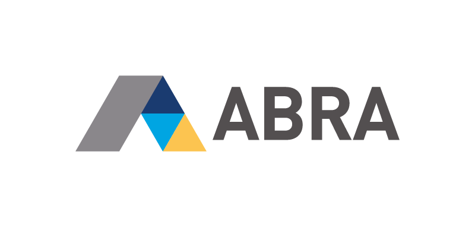

O společnosti
ABRA je na trhu od roku 1991
Primární zaměřením je výroba ERP systému
Společnost je rozdělena na několik divizí a momentálně v ní pracuje přes 150 zaměstnanců
Před 5ti lety ABRA koupila softwarovou divizi společnosti NEOTECH která se hlavně zabývala tvorbou webových řešení
Přes 3roky vyvíjíme cloudové ERP primaERP první modul je
primaTIME
pro monitoring času
Před rokem ABRA koupila společnost FlexiBee
Aktuálně se ve firmě využívá mnoho různých technologií, frameworků a další přibývají
Další technlogie
Twitter Bootstrap
Redis
Angular JS
NewRelic
Ruckusing migrations
Microsoft Azure
Technologie a služby které momentálně testujeme
CodeShip pro CI
React JS
Aurelia
Codeception
Git deployment
Na čem můj team?
Vyvíjíme vlastní CMS nad Nette
Webové stránky na míru
Webové aplikace na zakázku (logistika, CRM, B2B portály)
Proč jsme tady?
Scháníme nové posily do týmu
Práce v Písku nebo v Praze
Práce v mladém kolektivu
Možnost rozvoje a seznámení se novými technologiemi
Kontakty
Aktuálně nabízené pozice na
www.abra.eu
Kontakt na mě
Twitter
@stenlyk
Skype stenly.k
Prezentaci najdete na adrese
http://goo.gl/uODaSd
Odměna pro ty kdo příjdou
Kromě možné zajímavé práce i setkání s naší krásnou personalistkou